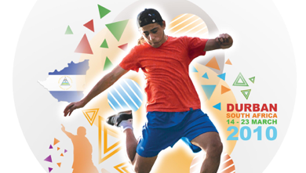
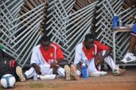
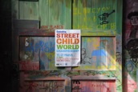

STREET CHILD WORLD CUP 2010


Mark & Dan Craig were in Durban as part of BMS’ film crew to record both the tournament and also the stories of the children from the competing countries.
WCF helped Dan to cover his costs for the trip - there are more pictures on the ‘Galleries’ page.


